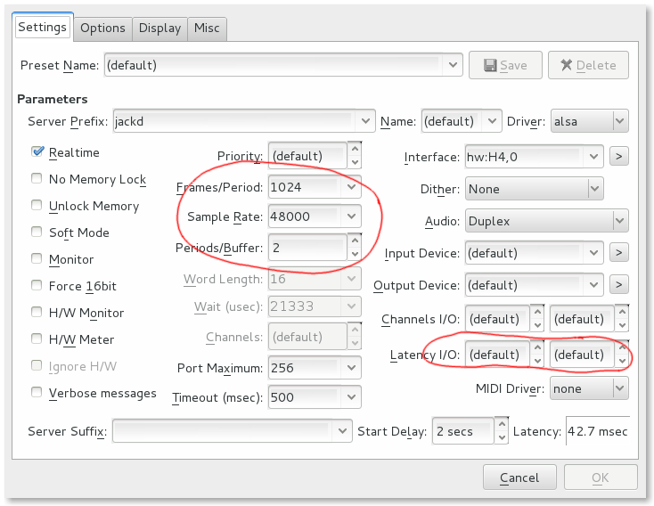
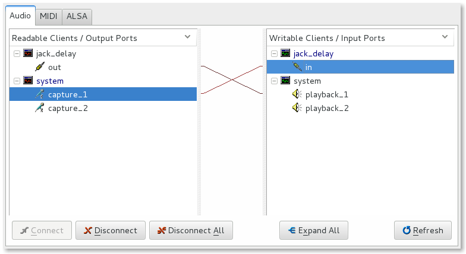

Latency free overdubbing in Ardour
In this article I explain how to set up JACK and Ardour for latency free overdubbing.
Please send feedback to ricli85@gmail.com.
First version published 30 September 2013.
Where is latency introduced?
Let's say we have one track with a metronome click. Now we want to record a chord progression over this metronome click.
playback |> > > > |> > > > |
----------|----------------|----------------|
recording | | |
t
At time t, we are at the beginning of bar 2. It starts with a metronome click. At time t, Ardour sends the first sample of the metronome click to the speakers. It passes various stages in the computer and a DA converter in our audio interface. It will take an amout of time before we actually hear the sound. We call that time output delay (OD). When we hear the sound we react to it and play a chord on our instrument. It will take an amount of time for our microphone to capture the sound, convert it to a digital signal, and send it to Ardour. We call that time input delay (ID).
- At time t - Ardour sends playback signal to speakers
- At time t+OD - We hear the metronome click
- At time t+OD+ID - Our reaction has been recorded and arrived in Ardour
The time between Ardour sending the signal to the speakers and it receiving a recorded signal back is thus OD+ID.
In order for the two tracks to line up perfectly, Ardour has to compensate for this latency. It can do that, but we need to know the input and output latency of our system.
Measure I/O latency
Setup
In order to measure the I/O latency, we need to create a loop. That way a test program can send a signal and measure the time it takes for the signal to travel through the system.
I use a Zoom H4n as a USB audio interface. The first way to close the loop is with a direct patch cable:

We connect the patch cable from the headphone line out to a line in. The H4n has combo inputs that works for microphones, electric instrument, or line level sources.
The second way to close the loop is with a speaker and a microphone:

We connect headphones to the headphone line out and put them close to the built in microphones on the H4n.
Process
Now that we have the loop set up in hardware, this is the process to measure the I/O latency:
Start JACK with the given settings
From QjackCtl, click "Setup...":
Adjust frames/period, sample rate, and periods/buffer. Make sure latency I/O are both set to 0 (default).
Click "OK" to close the dialog, then click "Start".
Start jack_iodelay
Run the following command in the terminal:
jack_iodelay
Connect
From QjackCtl, click "Connect":
This will create the loop in software as well so that jack_iodelay can capture the signal that it sends out.
Observe output
We should see something like this:
4921.269 frames 102.526 ms total roundtrip latency extra loopback latency: 1849 frames use 924 for the backend arguments -I and -O
Note that the suggested number (924) is only valid for the configuration that we entered in step 1.
To compensate for the roundtrip latency, we should enter this number for both the input and the output latency in the settings dialog in step 1.
Results
The Zoom H4n supports 44.1kHz and 48kHz. I ended up with the following measurements:
| Sample rate (kHz) | Frames/Period | Periods/Buffer | Loop type | Roundtrip latency (ms) | Suggested I/O |
|---|---|---|---|---|---|
| 44.1 | 1024 | 2 | Direct | ~1100 (increasing) | |
| 44.1 | 1323 (44.1*30) | 2 | Direct | ~1000 (increasing) | |
| 48 | 1024 | 2 | Direct | 101.5 | ~897 |
| 48 | 1024 | 2 | Mic | 122.4 | ~895 |
| 48 | 1024 | 3 | Direct | 122.8 | ~899 |
| 48 | 1024 | 3 | Mic | 122.4 | ~889 |
| 48 | 1056 (48*22) | 2 | Direct | 104.4 | ~920 |
Conclusions
USB and 48kHz
When measuring using 44.1kHz, the suggested value for latency I/O kept increasing. I asked about this on IRC:
<ricli85> Some reports on the increasing number that jack_iodelay gives me: If I set 48kHz sample rate and frames/period=1056 (multiple of 48), I seem to get a more stable number. <las> ricli85: many USB devices work correctly *only* at 48kHz
Conclusion: Always use 48kHz sample rate for our USB audio interface.
Persios/buffer
This parameter doesn't seem to have any effect on the roundtrip latency.
Direct vs mic
The roundtrip latency seems to be smaller when using the mic than when using the direct patch cable.
This is a bit surprising to me, because when using a mic, the sound has to travel that extra distance through the air. But the delay was not significantly smaller, and during the measurements, the delay number kept going up and down (although stabalizing around some value).